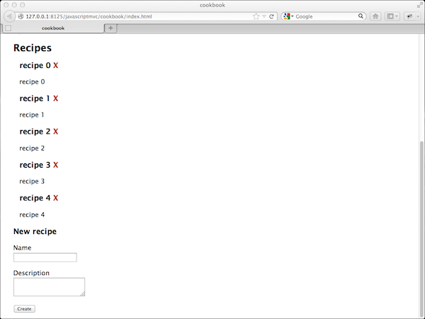
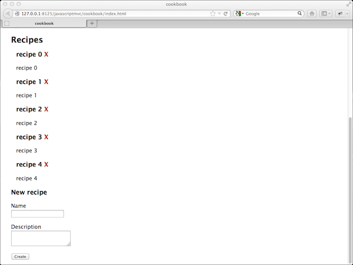
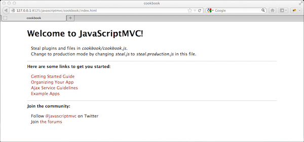

We're going to create a basic cookbook application that
lets us create, and delete recipes. It will look like:

We'll use JavaScriptMVC's generator scripts to
assist in setting up your application's
files and folders. They save time creating boilerplate
js, html, and css files.
Generating an Application
To create your application, open a console window and
navigate to your root folder, and run:
> ./js jmvc/generate/app cookbook
This script creates an application folder and
files. Here's what each file does:
cookbook/ // folder for your app
cookbook.less // less for your app
index.html // a page for your app
cookbook.js // app file, loads other files
test.html // app's test page
cookbook_test.js // app's tests
models/ // model & data layers
fixtures/ // simulated Ajax responses
scripts/ // command line scripts
build.html // html for build script
build.js // build script
clean.js // code cleaning / linting
crawl.js // generate search content
docs.js // create documentation
We'll use index.html for our application. If
you need to make another page for your app you
can generate it:
The application file loads and configures your applications resources. Currently,
it's loading the app's less file, fixtures (there are no fixtures yet).
Now it's time to make some widgets, models, and fixtures that allow us to create and delete
recipes!
Scaffolding Recipes
We'll use the scaffold generator to quickly create:
A Recipe model for CRUDing recipes on the server
A Fixture for simulating a recipe service
A widget for creating recipes
A widget for listing and deleting recipes
To scaffold recipes run the following in the command-line console:
Creates a recipe model that is used
to create, retrieve, updated, and delete
recipes on the server.
recipe_test.js
Tests the recipe model.
fixtures.js
The generator added code to simulate the Recipe Model's Ajax
requests (You might not have a Recipe service).
recipe/create
This folder contains the code, demo page, and tests for a
widget that creates Recipes.
recipe/list
This folder contains the code, demo page, and tests for a
widget that lists recipes.
(steal added)
"(steal added)" means the generator is
adding a steal call to load
a generated file for you. For example,
cookbook/cookbook.js now steals 'cookbook/recipe/create' and 'cookbook/recipe/list'.
Page Setup
After the generator runs, your application file (cookbook.js)
looks like:
steal(
'cookbook/recipe/create',
'cookbook/recipe/list',
'./cookbook.less',
'./models/fixtures/fixtures.js',
function(RecipeCreate, RecipeList){
new RecipeList('#recipes');
new RecipeCreate('#create');
})
You'll notice that it now loads cookbook/recipe/create
and cookbook/recipe/list and then tries to add these widgets to the
#recipes and #create elements.
However, #recipes and #create elements did not
exist! Fortunately, the generator also added their HTML to index.html so that
it includes:
Essentially, Chrome does not allow AJAX requests to
files outside the html page's folder. JavaScriptMVC
organizes your files into separate folders.
To fix this, just run JavaScriptMVC from a web server.
Or, you can use another browser. Or you can add
`--allow-file-access-from-files` to Chrome's start script.
If you're annoyed like we are,
star the issue
and let
google know you'd like Chrome to work on the filesystem!
Continue to Testing Cookbook or continue to read how
this code works.
How it Works
The Cookbook application can be broken into 5 parts:
The Recipe model
The recipes fixture
The RecipeCreate control
The RecipeList control
The cookbook application that puts it all together
This loads CanJS's core, which includes can.Model, and uses it to create a
constructor function that lets us
create, retrieve, update, and delete models programmatically like:
create
// create a recipe instance
var recipe = new Recipe({
name: 'Hot Dog',
description: 'nuke dog, put in bun'
})
// call save to create on the server
recipe.save()
retrieve
// get recipes from the server
Recipe.findAll({}, function(recipes){
// do something with recipes
})
update
// update the properties of a created recipe
recipe.attr({
name: 'Bratwurst',
description: 'nuke bratwurst, put in bun'
});
// call save to send updates to the server
recipe.save()
delete
// call destroy
recipe.destroy()
Of course, we don't have a server to make requests to. This is
where fixtures come in.
The Recipe Fixture
Fixtures intercept AJAX requests and
simulate the response. They enable
you to start work on the front end without a ready server.
Open cookbook/models/fixtures/fixtures.js and you will this:
The scaffold generator added this to simulate a server
with 5 recipes. Read more about how this works on
store's documentation page.
The RecipeCreate control
Open cookbook/recipe/create/create.html in your
browser. This page demos the RecipeCreate control and
lets you create recipes. It lets us work on a control
independent of the rest of the application.
Open cookbook/recipe/create/create.js to find:
steal('can',
'cookbook/models/recipe.js',
'./init.ejs',
'jquery/dom/form_params',
function (can, Recipe, initView) {
return can.Control(
/** @Prototype */
{
init: function () {
this.element.html(initEJS());
},
submit: function (el, ev) {
ev.preventDefault();
el.find('[type=submit]').val('Creating...');
new Recipe(el.formParams()).save(function() {
el.find('[type=submit]').val('Create');
el[0].reset()
});
}
});
});
This code uses steal to load dependencies and then creates and returns
a control constructor function. In cookbook/cookbook.js that
control constructor function is aliased as RecipeCreate. A new instance
is created on the #create element as follows:
new RecipeCreate('#create')
When a control instance is created, the control's init
method is called and runs
this.element.html(initEJS());
initEJS is a renderer function that renders
the template at cookbook/recipe/create/init.ejs into
a documentFragment. That document fragment is set as the control's inner html
using jQuery's html method.
When a control instance is created, it also binds event handlers on the
control's element. In this case, it listens for "submit" events on the element.
When a submit event happens, it updates the submit button's text, then creates
a new recipe.
The RecipeList control
Open cookbook/recipe/list/list.html in your
browser. This page demos the RecipeList control. It loads
Recipes from the server, lets you delete recipes, and it also
listens for recipes being created and adds them to the list.
Open cookbook/recipe/list/list.js to
see the control's code:
steal('can',
'./init.ejs',
'cookbook/models/recipe.js',
function (can, initEJS, Recipe) {
return can.Control(
/** @Static */
{
defaults : {
Recipe: Recipe
}
},
/** @Prototype */
{
init: function () {
this.list = new Recipe.List();
this.element.html(initEJS(this.list));
this.list.replace(Recipe.findAll());
},
'.destroy click': function (el) {
if (confirm("Are you sure you want to destroy?")) {
el.closest('.recipe').data('recipe').destroy();
}
},
"{Recipe} created": function (Model, ev, instance) {
this.list.push(instance);
}
});
});
In cookbook/cookbook.js, when a new RecipeList is created, init is
called. init first creates an empty can.Model.List:
this.list = new Recipe.List();
Then it renders cookbook/recipe/list/init.ejs and sets the result as
the inner html of the controls element:
In the template, this is this.list. this.list is initially empty so
the inner html of this.element is empty. The replace
method replaces the contents of the list with items. If items is a
[can.deferred deferred], it replaces the contents of the list with the
resolved value of the deferred.
The following replaces the items in this.list with Recipes from the server:
this.list.replace(Recipe.findAll());
Once the list is updated, the page is automatically updated
with live-binding. init.ejs iterates through the recipes. For each
recipe, it creates an LI element and renders name and description.
Notice that the view adds each recipe instance to its LI element's data with:
<%= (el) -> el.data('recipe', current) %>
Destroying Recipes
Each recipe has a destroy link. When it is clicked, the list's
'.destroy click' method is called:
'.destroy click': function (el) {
if (confirm("Are you sure you want to destroy?")) {
el.closest('.recipe').data('recipe').destroy();
}
}
This method checks if you want to destroy the recipe. If you do,
it finds the parent 'recipe' element and gets back the recipe instance that's
in jQuery.data. It then calls model's destroy method.
When a model is destroyed, all occurrences will be removed from any list. Due to live binding
the recipe on the page will be removed automatically.
Creating Recipes
When a recipe is created, a "created" event is triggered. The List control listens for this
with:
When a recipe is created, we just add it to the list we are currently displaying.
Thanks to live binding the list will show the new recipe.
Putting it all Together
The cookbook application loads both of these widgets and adds them to the page.
When RecipeCreate creates a Recipe, it creates a 'created' event which
RecipeList listens for and adds that newly created recipe to its list
of recipes.
It's useful to notice that RecipeCreate and RecipeList operate independently of
each other.
We're going to create a basic cookbook application that lets us create, and delete recipes. It will look like:
 We'll use JavaScriptMVC's generator scripts to assist in setting up your application's files and folders. They save time creating boilerplate js, html, and css files.
Generating an Application
To create your application, open a console window and navigate to your root folder, and run:
This script creates an application folder and files. Here's what each file does:
We'll use index.html for our application. If you need to make another page for your app you can generate it:
Or you add the steal script to an existing page page followed by
?cookbooklike:If you open //cookbook/index.html, you'll see a JavaScriptMVC welcome screen.

Open
cookbook/index.htmland you will find:This line loads steal and tells steal to load
cookbook/cookbook.js.cookbook/cookbook.jsis your application file. Open it and you will find:The application file loads and configures your applications resources. Currently, it's loading the app's less file, fixtures (there are no fixtures yet).
Now it's time to make some widgets, models, and fixtures that allow us to create and delete recipes!
Scaffolding Recipes
We'll use the scaffold generator to quickly create:
To scaffold recipes run the following in the command-line console:
Here's what each part does:
recipe.js
Creates a recipe model that is used to create, retrieve, updated, and delete recipes on the server.
recipe_test.js
Tests the recipe model.
fixtures.js
The generator added code to simulate the Recipe Model's Ajax requests (You might not have a Recipe service).
recipe/create
This folder contains the code, demo page, and tests for a widget that creates Recipes.
recipe/list
This folder contains the code, demo page, and tests for a widget that lists recipes.
(steal added)
"(steal added)" means the generator is adding a steal call to load a generated file for you. For example,
cookbook/cookbook.jsnow steals'cookbook/recipe/create'and'cookbook/recipe/list'.Page Setup
After the generator runs, your application file (
cookbook.js) looks like:You'll notice that it now loads
cookbook/recipe/createandcookbook/recipe/listand then tries to add these widgets to the#recipesand#createelements.However,
#recipesand#createelements did not exist! Fortunately, the generator also added their HTML toindex.htmlso that it includes:Remove all other generated parts of the
index.htmlpage so it just looks like:Run Cookbook
That's it. You've created a simple Cookbook application. Open cookbook/index.html in a browser.
NOTICE: If you are having problems and using Chrome from the filesystem, it's because Chrome has an insanely restrictive AJAX policies on the filesystem.
Essentially, Chrome does not allow AJAX requests to files outside the html page's folder. JavaScriptMVC organizes your files into separate folders.
To fix this, just run JavaScriptMVC from a web server. Or, you can use another browser. Or you can add `--allow-file-access-from-files` to Chrome's start script.
If you're annoyed like we are, star the issue and let google know you'd like Chrome to work on the filesystem!
Continue to Testing Cookbook or continue to read how this code works.
How it Works
The Cookbook application can be broken into 5 parts:
The Recipe Model and Fixture
cookbook/models/recipe.jslooks like:This loads CanJS's core, which includes can.Model, and uses it to create a constructor function that lets us create, retrieve, update, and delete models programmatically like:
create
retrieve
update
delete
Of course, we don't have a server to make requests to. This is where fixtures come in.
The Recipe Fixture
Fixtures intercept AJAX requests and simulate the response. They enable you to start work on the front end without a ready server.
Open
cookbook/models/fixtures/fixtures.jsand you will this:The scaffold generator added this to simulate a server with 5 recipes. Read more about how this works on store's documentation page.
The RecipeCreate control
Open
cookbook/recipe/create/create.htmlin your browser. This page demos the RecipeCreate control and lets you create recipes. It lets us work on a control independent of the rest of the application.Open
cookbook/recipe/create/create.jsto find:This code uses steal to load dependencies and then creates and returns a control constructor function. In
cookbook/cookbook.jsthat control constructor function is aliased as RecipeCreate. A new instance is created on the#createelement as follows:When a control instance is created, the control's
initmethod is called and runsinitEJSis a renderer function that renders the template atcookbook/recipe/create/init.ejsinto a documentFragment. That document fragment is set as the control's inner html using jQuery's html method.When a control instance is created, it also binds event handlers on the control's element. In this case, it listens for "submit" events on the element.
When a submit event happens, it updates the submit button's text, then creates a new recipe.
The RecipeList control
Open
cookbook/recipe/list/list.htmlin your browser. This page demos the RecipeList control. It loads Recipes from the server, lets you delete recipes, and it also listens for recipes being created and adds them to the list.Open
cookbook/recipe/list/list.jsto see the control's code:In
cookbook/cookbook.js, when anew RecipeListis created,initis called.initfirst creates an empty can.Model.List:Then it renders
cookbook/recipe/list/init.ejsand sets the result as the inner html of thecontrolselement:init.ejslooks like:In the template,
thisisthis.list.this.listis initially empty so the inner html ofthis.elementis empty. The replace method replaces the contents of the list withitems. Ifitemsis a [can.deferred deferred], it replaces the contents of the list with the resolved value of the deferred.The following replaces the items in
this.listwithRecipesfrom the server:Once the list is updated, the page is automatically updated with live-binding.
init.ejsiterates through the recipes. For each recipe, it creates an LI element and rendersnameanddescription.Notice that the view adds each recipe instance to its LI element's data with:
Destroying Recipes
Each recipe has a destroy link. When it is clicked, the list's
'.destroy click'method is called:This method checks if you want to destroy the recipe. If you do, it finds the parent 'recipe' element and gets back the recipe instance that's in jQuery.data. It then calls model's destroy method.
When a model is destroyed, all occurrences will be removed from any list. Due to live binding the recipe on the page will be removed automatically.
Creating Recipes
When a recipe is created, a "created" event is triggered. The List control listens for this with:
When a recipe is created, we just add it to the list we are currently displaying. Thanks to live binding the list will show the new recipe.
Putting it all Together
The cookbook application loads both of these widgets and adds them to the page. When RecipeCreate creates a Recipe, it creates a 'created' event which RecipeList listens for and adds that newly created recipe to its list of recipes.
It's useful to notice that
RecipeCreateandRecipeListoperate independently of each other.Continue to Testing Cookbook.